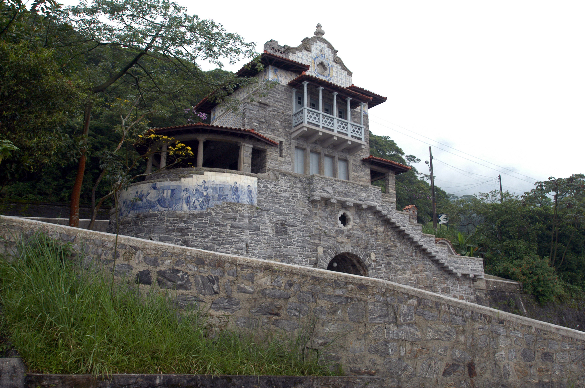

Vamos conhecer mais sobre essa cidade maravilhosa
Como tudo surgiu?
A origem de São Bernardo do Campo remonta ao século XVI, com a fundação da vila de Santo André
da
Borda do Campo, em 1553.
A vila foi fundada por João Ramalho, um português que se casou com uma índia da tribo Tupinambá.
Em 1717, o Abade Frei Bartolomeu da Conceição ordenou a construção de uma capela dedicada a São
Bernardo, na
fazenda dos monges. A fazenda dos monges emprestaria o nome à região, que passaria a ser
conhecida
como bairro de São Bernardo, da vila de São Paulo.
Em 1812, o bairro de São Bernardo foi elevado à categoria de distrito, subordinado ao município
de
São Paulo.
Em 1889, o distrito foi elevado à categoria de vila, com o nome de São Bernardo.
Em 1944, o município de São Bernardo foi desmembrado do município de Santo André, tornando-se um
município independente.
O crescimento de São Bernardo do Campo foi impulsionado pela industrialização da região, que
começou
no início do século XX.
A cidade se tornou um importante polo industrial do Brasil, abrigando fábricas de automóveis, de
eletrodomésticos e de outros produtos.
Atualmente, São Bernardo do Campo é uma cidade moderna e desenvolvida, com uma população de
cerca de
850 mil habitantes.
A cidade é um importante centro econômico, cultural e social da região do ABC Paulista.
Aqui estão alguns marcos importantes na história de São Bernardo do Campo:
Como SBC está em 2023?
São Bernardo do Campo é uma cidade moderna e desenvolvida, com uma população de cerca de 850 mil
habitantes.
A cidade é um importante centro econômico, cultural e social da região do ABC Paulista.
A cidade tem uma economia diversificada, com destaque para os setores industrial, comercial e de
serviços.
O setor industrial é o principal empregador da cidade, com destaque para as indústrias
automobilísticas, eletrodomésticas e de alimentos.
A cidade também é um importante centro cultural, com diversos museus, teatros e bibliotecas. São
Bernardo do Campo
também é sede da Universidade Federal do ABC, uma das principais universidades públicas do
Brasil.
A cidade tem uma infraestrutura urbana bem desenvolvida, com um sistema de transporte público
eficiente e uma rede de escolas e hospitais públicos de qualidade.
Nos últimos anos, São Bernardo do Campo tem investido em áreas como educação, cultura e
mobilidade
urbana.
A cidade tem se esforçado para melhorar a qualidade de vida de seus habitantes e se tornar uma
cidade mais sustentável.
Aqui estão alguns dos principais destaques da cidade de São Bernardo do Campo hoje em dia:
São Bernardo do Campo é uma cidade em constante crescimento e desenvolvimento. A cidade oferece uma ampla gama de oportunidades para seus habitantes e é um importante centro econômico, cultural e social da região do ABC Paulista.
Pontos Turisticos de SBC
Parque Cidade da Criança

A Cidade da Criança é um parque de diversões localizado na cidade de São Bernardo do Campo,
no estado de São Paulo. O parque foi inaugurado em 1968 e é o primeiro parque temático do
Brasil. A Cidade da Criança tem cerca de 35 atrações, voltadas principalmente para crianças
até 14 anos, ao público infantojuvenil.
Parque Caminhos do Mar
O Parque Estadual Serra do Mar - Caminhos do Mar é um parque estadual localizado nos
municípios de São Bernardo do Campo, Cubatão e Santos, no estado de São Paulo. O parque
tem cerca de 30 quilômetros de extensão e abriga uma área de Mata Atlântica preservada.
O parque foi criado em 1993 com o objetivo de proteger a Mata Atlântica da região e oferecer
à população um espaço para lazer e educação ambiental. O Parque Caminhos do Mar é dividido em
três roteiros: Roteiro Histórico, Roteiro da Serra e o Roteiro das Cachoeiras.
Parque Estoril

O Parque Natural Estoril é uma unidade de conservação da Mata Atlântica, da Represa Billings
e da fauna silvestre, localizada no município de São Bernardo do Campo, no estado de São Paulo.
O parque tem cerca de 373 000 m² de área total e está localizado na região do Riacho Grande.
O Parque Estoril foi fundado em 1955 e, em 2013, foi transformado em unidade de conservação.
O objetivo do parque é preservar a biodiversidade da região, promover a educação ambiental
e oferecer um espaço de lazer para a população.
Parque Municipal Engenheiro Salvador Arena

O Parque Municipal Engenheiro Salvador Arena é um parque urbano localizado no município de
São Bernardo do Campo, no estado de São Paulo. O parque tem cerca de 120 000 m² de área
total e está localizado na região do Rudge Ramos. O Parque Municipal Engenheiro Salvador Arena
foi fundado em 1986 e é uma homenagem ao engenheiro Salvador Arena, que foi um importante
empresário e filantropo do município. O objetivo do parque é oferecer um espaço de lazer e
convivência para a população.
São Bernardo Plaza Sopping

O São Bernardo Plaza Shopping é um shopping center localizado no município de São Bernardo do
Campo,
no estado de São Paulo. O shopping tem cerca de 100.000 m² de área bruta locável e está
localizado
na região do Centro. O São Bernardo Plaza Shopping foi inaugurado em 1996 e é um dos maiores
shoppings da região do ABC Paulista. O shopping abriga mais de 200 lojas, incluindo lojas de
vestuário,
calçados, acessórios, eletrônicos, móveis, decoração, brinquedos, restaurantes e serviços.
O São Bernardo Plaza Shopping também possui um cinema com 10 salas, um supermercado, uma
academia
e uma área de lazer com playground e brinquedoteca.
Fabrica de Cultura

A Fábrica de Cultura de São Bernardo do Campo é um equipamento cultural do Governo do Estado de
São Paulo, localizado no bairro do Rudge Ramos. A unidade foi inaugurada em 2020 e é a primeira
do modelo 4.0, que integra as áreas de cultura, tecnologia e inovação. A Fábrica de Cultura de
São Bernardo do Campo oferece uma programação diversificada, que inclui exposições, shows, peças
de teatro, oficinas, cursos e workshops. A unidade também conta com uma biblioteca, um cinema,
um espaço maker e um laboratório de tecnologia.
Parque da Juventude

O Parque da Juventude Città di Maróstica, localizado no bairro Baeta Neves, em São Bernardo do
Campo,
é um dos maiores espaços dedicados aos esportes radicais da América Latina. O parque tem cerca
de 22.500 m²
de área total e abriga diferentes modalidades de esportes radicais, entre elas: skate, patins,
BMX, tirolesa,
rapel e escalada. O parque é dividido em duas áreas principais: a área de esportes radicais e a
área de lazer.
Rota Ecoturística Caminho do Sal

A Rota Ecoturística Caminho do Sal é um roteiro de turismo sustentável que percorre os municípios
de
São Bernardo do Campo, Santo André e Mogi das Cruzes, no estado de São Paulo. O percurso tem
cerca
de 50 quilômetros e passa por áreas de mata atlântica preservada, onde é possível observar a
fauna
e a flora da região. A rota é dividida em três trechos: Trecho do Zanzalá (15 km), Trecho dos
Carvoeiros (10 km) e Trecho do Bento Ponteiro (25 km).
Zoológico Municipal

O Zoológico Municipal de São Bernardo do Campo (ZooSBC) é um espaço dedicado à conservação da
fauna brasileira, localizado no Parque Estoril, na cidade de São Bernardo do Campo, no estado
de São Paulo. O zoológico tem cerca de 32 recintos de exposição, abrigando aproximadamente
250 animais, de 70 espécies, todas da fauna nativa brasileira.